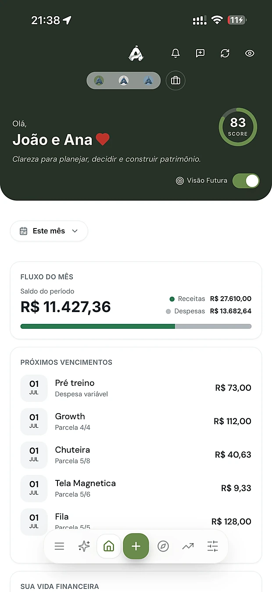
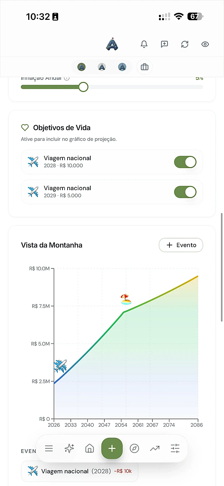
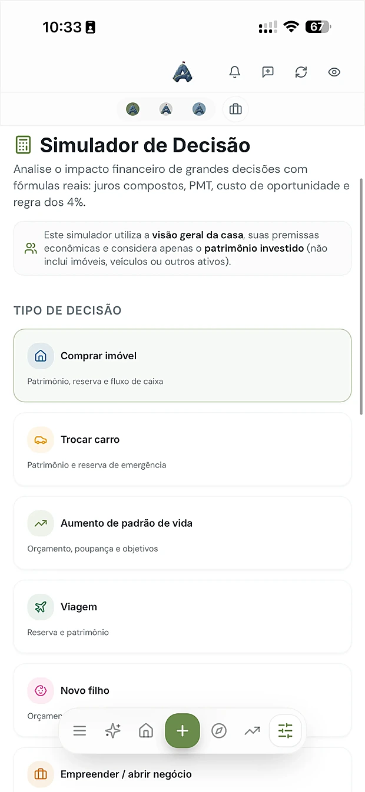
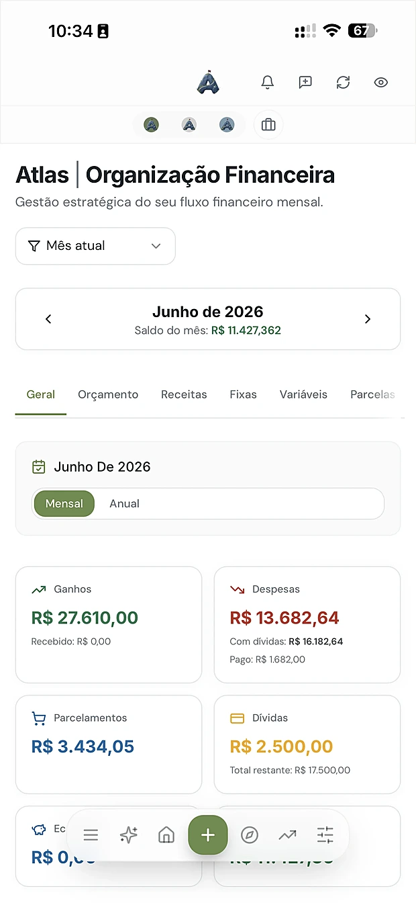

O que te impede de subir não é o salário.
É o peso invisível na mochila.
Abre a mochila. Olha o que você vem carregando montanha acima, todos os meses:
Você não precisa ganhar mais.
Você precisa carregar menos dúvida.
Nenhum alpinista sobe sem mapa.
Por que você sobe sem o seu?
App de controle de gastos olha pra trás e te mostra onde você errou. O Atlas é outra coisa: é um mapa do seu futuro. Ele responde as três perguntas que nenhuma planilha respondeu pra você até hoje.
Onde eu estou?
O Atlas Score resume sua vida financeira em um número que se atualiza a cada decisão. Em 2 segundos você sabe sua posição na montanha.
Qual o próximo passo?
Em vez de 40 gráficos confusos, um plano claro: o que fazer este mês pra sua meta ter nome, valor e data.
E se eu escolher outra trilha?
Guardar R$ 500 em vez de R$ 300 muda sua aposentadoria em anos. O Atlas mostra isso em números reais, calculados com os seus dados.
Seu equipamento de subida:
12 ferramentas, um sistema.
Cada ferramenta responde uma pergunta real da sua vida. Nos 7 dias grátis, você usa todas.


Tudo num lugar, em segundos
Você abre o app e já sabe onde está. Sem planilha, sem 40 gráficos, sem confusão.
- Atlas Score e fluxo do mês numa tela só
- Próximos vencimentos antes de virarem juros
- Modo casal: visão Pessoa 1, Pessoa 2 ou Casal num clique
- 5 minutos por dia bastam, o resto o sistema faz sozinho

Veja o cume antes de chegar nele
Seu patrimônio projetado pra vida inteira, reagindo em tempo real a cada escolha que você simula.
- Ajuste renda, aposentadoria e inflação e veja a curva reagir na hora
- Objetivos de vida (viagem, casa, filho) marcados no gráfico, com data
- Aposentadoria com valor e data, e não uma promessa vaga

Teste a trilha antes de pisar nela
Comprar a casa? Trocar o carro? Consórcio ou financiamento? Decida com fórmulas reais, não com achismo.
- Juros compostos, PMT, custo de oportunidade e regra dos 4%
- 8 cenários prontos, incluindo Consórcio x Financiamento, com análise por IA
- O impacto de cada escolha em 10, 20 e 30 anos, antes de assinar qualquer contrato

Cada gasto vira uma decisão consciente
Aqui ninguém te manda cortar o cafezinho. Você alinha os gastos com o que realmente importa pra você.
- Categorias que revelam seus valores: alimentação, educação, lazer
- 8 abas de controle: orçamento, receitas, fixas, variáveis, parcelas, dívidas e economias
- Gaste sem culpa no que te faz feliz, dentro de um limite que você definiu
Seu altímetro financeiro
Um número, calculado sobre 7 pilares da sua vida financeira, que sobe a cada boa decisão. Chega de "será que estou indo bem?".
O guia que conhece seus números
Pergunte qualquer coisa sobre o seu dinheiro. A resposta vem do seu plano real, não de teoria genérica.
Tudo que uma expedição completa precisa
O Método Atlas: 5 relatórios
que valem uma consultoria inteira.
Isso aqui nenhum outro app tem. São os diagnósticos nascidos de mais de 300 planejamentos de famílias reais, agora gerados sobre os seus dados. Quatro deles escritos por IA treinada no método. Você recebe, lê e sabe exatamente o que fazer.
Base da Montanha
O diagnósticoOnde você está de verdade: patrimônio, dívidas, hábitos e os pontos cegos que você não enxerga sozinho.
Estratégia de Subida
O planoSeu planejamento 360°: o que fazer, em que ordem, com números e prazos. O caminho desenhado.
Controle da Jornada
O acompanhamentoO raio-x do período: o que funcionou, o que fugiu do plano e onde ajustar antes que vire problema.
Guia da Jornada
O conselheiroOrientações práticas sobre as suas próximas decisões, como um planejador de bolso que já leu tudo sobre você.
Vista da Montanha
A projeção vivaO único que não é documento: é a tela onde o seu futuro reage em tempo real a cada escolha.
Seus primeiros relatórios saem ainda na primeira semana, dentro dos 7 dias grátis
Vive de PJ? Então essa parada
é obrigatória.
Autônomo, MEI ou dono de empresa: você sabe o caos que é misturar a conta da empresa com a da casa. O Atlas Negócios separa os dois mundos e mostra como um alimenta o outro.
Múltiplas empresas
Mais de um CNPJ? Cada empresa com seu financeiro próprio, e você vendo tudo consolidado.
Regras de alocação
Defina quanto do que entra vira pró-labore, reserva e reinvestimento. O Atlas aplica a regra sozinho.
Previsão de caixa + simulador
Veja o caixa dos próximos meses antes de decidir contratar, comprar equipamento ou aumentar a retirada.
Receita por cliente
Prevista vs. confirmada, cliente a cliente. Você descobre quem realmente sustenta o seu negócio.
Histórico PJ → PF
Cada transferência registrada. O que é da empresa e o que é seu, sem mistura e sem susto no imposto.
Score de saúde da empresa
Como o Atlas Score, mas pro seu negócio: um número que diz se a empresa está saudável ou pedindo socorro.
Todo bom guia
já se perdeu uma vez.
Cresci em uma pousada no litoral de Santa Catarina. Meus pais tocaram o negócio por 25 anos. Trabalharam muito, sem nunca ter um planejamento. Em 2020, no segundo mês da pandemia, a pousada fechou.
"E agora? Estamos fazendo certo?"
Era a minha vez de responder. Comecei a criar um sistema. Primeiro pra mim e minha esposa. Depois pra família, pros amigos, até chegar a mais de 300 planejamentos financeiros de famílias reais.
Esse sistema virou o Atlas. Ele não diz o que fazer: mostra onde você está, o próximo passo e o que muda se seguir um caminho diferente.
É o mapa que meus pais não tiveram quando mais precisaram.
Ninguém sobe sozinho.
Conheça quem já está na corda.
Pessoas reais que trocaram o caos por clareza. ★★★★★
Em 30 dias parei de me perder nas contas. Hoje sei exatamente quanto posso gastar sem culpa.
A gente brigava por dinheiro. Planejando juntos no Atlas, acabou o stress e sobrou plano. Hoje é decisão a dois, sem briga.
Separar a vida pessoal da empresa era um caos. O Atlas me deu clareza pra finalmente crescer.
Vi minha renda passiva projetada e entendi, pela primeira vez, o meu caminho até a liberdade financeira.
Pela primeira vez sei pra onde meu dinheiro vai. Montei minha reserva em 4 meses.
Parei de usar três planilhas. O Atlas junta tudo e ainda me diz qual o próximo passo a dar.
Estava endividado e perdido. Hoje tenho um plano claro e já saí do vermelho.
Escolha o seu ritmo de subida.
Todos começam igual: 7 dias grátis com acesso completo, sem cartão. Você só escolhe o plano depois de ver o seu mapa pronto.
Essencial
Pra começar a enxergar.
- Controle financeiro do dia a dia
- Análises básicas + Atlas Score
- Acesso à comunidade
Pro
Pra planejar o futuro de verdade.
- Tudo do Essencial
- Planejamento de longo prazo + cenários
- Método Atlas: 5 relatórios de diagnóstico
- Atlas IA + Simulador de decisão
- Atlas Negócios (PF + PJ) e importações
- Acesso compartilhado incluso
Elite
Pra maestria financeira.
- Tudo do Pro
- Plano da Liberdade: 33 aulas
- Cursos avançados de educação financeira
- Suporte prioritário
- Prioridade em novas features
O risco é todo nosso, como deve ser. Você entra sem cadastrar cartão, então não existe "esqueci de cancelar e fui cobrado". Se em 7 dias o Atlas não te der mais clareza do que você teve nos últimos anos, é só fechar a aba. E se assinar e mudar de ideia: cancela em 2 cliques, sem multa, mantendo acesso até o fim do ciclo.
Você chegou.
Agora imagina isso com o seu dinheiro.

Essa sensação de olhar pra trás e ver o caminho inteiro, e de olhar pra frente sabendo exatamente o próximo passo: é isso que o Atlas entrega todos os dias. Daqui a um ano você vai estar um ano mais velho, com mapa ou sem mapa. A única coisa que muda é essa escolha.
Sem cartão · 5 minutos pra configurar · Cancele quando quiser
P.S. do guia pra você
Se você subiu até aqui, é porque alguma coisa ressoou. Talvez o cansaço de não saber pra onde o dinheiro vai. Talvez aquela viagem, aquela casa, aquela aposentadoria que você adia porque "será que dá?".
O Atlas não é a resposta. É o caminho. Os 7 dias grátis existem pra você descobrir se ele serve pra você. Sem risco, sem compromisso e sem cartão.
Você não precisa decidir agora se vai usar o Atlas pelos próximos 10 anos. Só precisa decidir se vale testar por 7 dias.